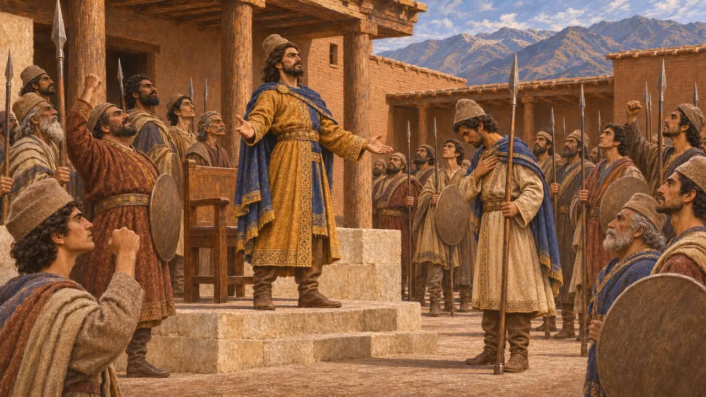
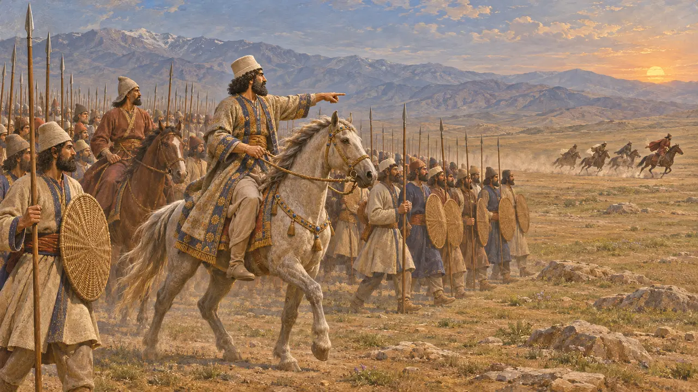
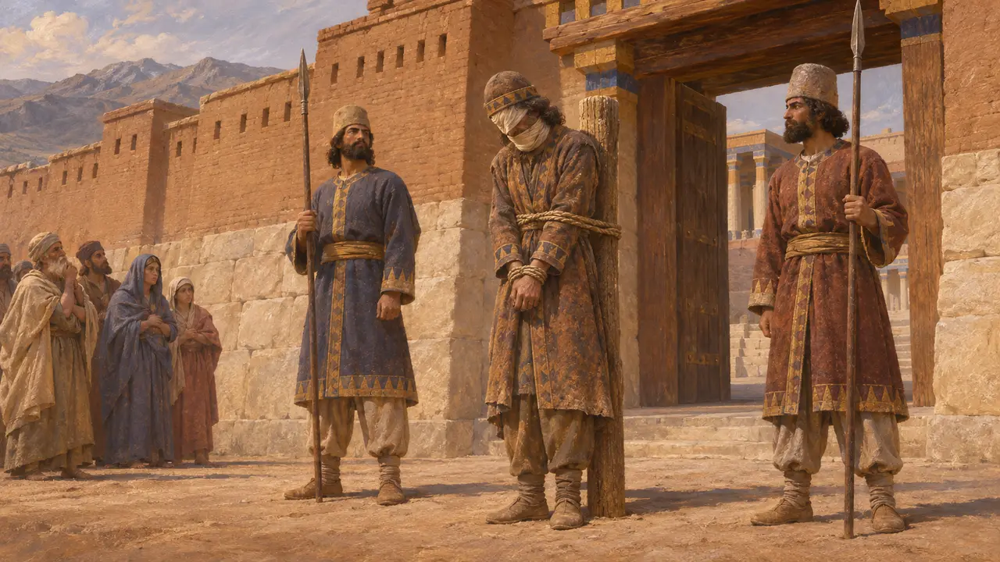
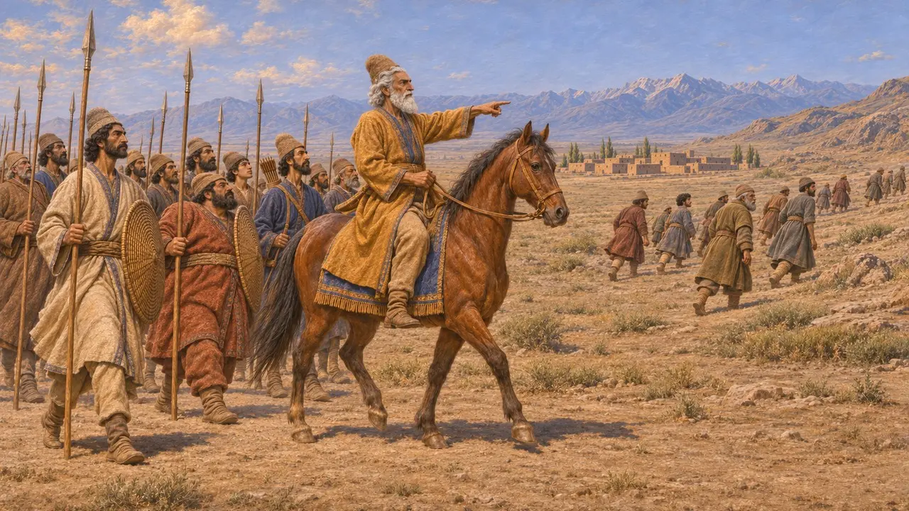
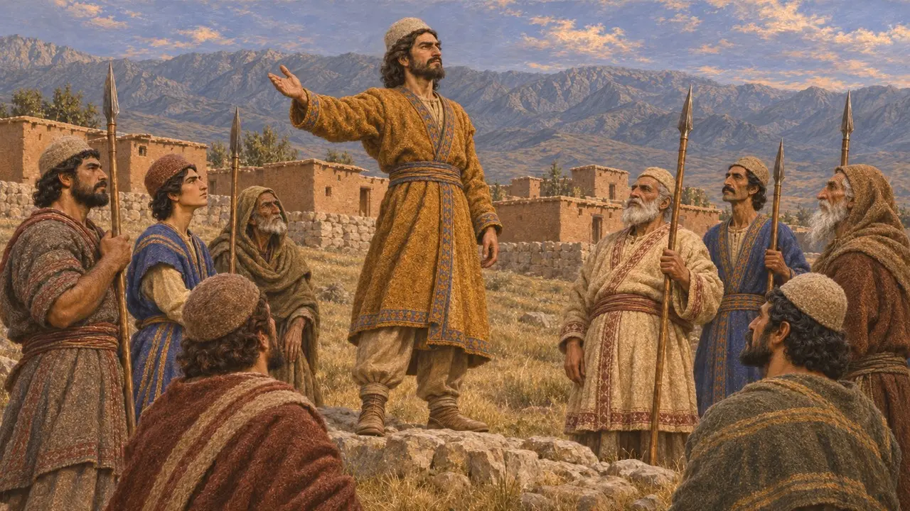

Encyclopédie › Batailles et événements

La révolte de Fravartish
Soulèvement mède contre Darius, gagnant la Parthie, l'Hyrcanie et la Sagartie, 522-521 av. J.-C.
Dans le jeu : Niveau 3 : Le Mensonge
Pendant l'hiver 522-521 av. J.-C., un Mède nommé Fravartish se fit passer pour Khshathrita, descendant de l'ancien roi mède Cyaxare, et les troupes mèdes présentes au palais passèrent de son côté. Nombre d'historiens le comptent parmi les soulèvements les plus graves de la première année de Darius, car il raviva le souvenir de la royauté mède et s'étendit vers l'est, jusqu'en Parthie et en Hyrcanie.
Dans le jeu : L'entrée du jeu suit le récit de Darius à Behistun : défaite à Kunduru, capture à Raga et empalement à Ecbatane. Elle ne mentionne ni la bataille antérieure d'Hydarnès à Maru ni les combats d'Hystaspe en Parthie.

Une prétention à l'ancien trône mède
Dans les sourcesDarius affirme qu'un Mède nommé Fravartish se souleva en Médie et dit au peuple qu'il était Khshathrita, de la famille de Cyaxare. Les troupes mèdes de la résidence royale passèrent de son côté, et il devint roi en Médie. Dans la tradition grecque, Cyaxare était le roi qui avait fait de la Médie une grande puissance ; cette prétention faisait donc appel aux souvenirs mèdes d'une domination antérieure à Cyrus.
DB §24

Hydarnès à Maru et Darius à Kunduru
Dans les sourcesDarius envoya d'abord une troupe de Perses et de Mèdes sous les ordres d'Hydarnès. Hydarnès combattit les rebelles à Maru en Médie, puis attendit le Roi à Kampanda, ce qui laisse penser que la bataille décida peu de choses. Darius vint lui-même de Babylone et vainquit Fravartish à Kunduru, probablement en mai 521 av. J.-C. Fravartish s'enfuit avec quelques cavaliers jusqu'à Raga, près de l'actuelle Téhéran, où les troupes lancées à sa poursuite le capturèrent.
DB §25; DB §31

Châtiment à Ecbatane
Dans les sourcesDarius affirme avoir tranché le nez, les oreilles et la langue du prisonnier et lui avoir crevé un œil, puis l'avoir gardé enchaîné à la porte du palais, à la vue de tous. Ensuite, il le fit empaler à Ecbatane, capitale des Mèdes, et mit à mort ses principaux partisans dans la forteresse de la ville. Sur le relief de Behistun, Fravartish figure parmi les rois rebelles enchaînés, désigné par une courte légende.
DB §32; DBe

Le soulèvement s'étend
Dans les sourcesLa Parthie et l'Hyrcanie se déclarèrent pour Fravartish. Hystaspe, le père de Darius, y combattit les rebelles et remporta une victoire décisive à Patigrabana après l'arrivée de renforts venus de Raga. Un Sagartien, Chissantakhma, se réclama lui aussi de la descendance de Cyaxare ; il fut capturé et empalé à Arbèles. La cause mède entraîna ainsi plusieurs régions dans la révolte.
DB §35-36; DB §33

Qui était Khshathrita
ContestéHérodote nomme un roi mède Phraorte, forme grecque de Fravartish, père de Cyaxare. Il dit seulement que les Mèdes se révoltèrent plus tard contre Darius et furent battus. Certains historiens rapprochent le nom Khshathrita d'un chef mède cité dans des textes assyriens des années 670 av. J.-C. Presque tout ce que nous savons vient de l'inscription de Darius lui-même ; l'origine réelle du rebelle et l'ordre exact des campagnes restent donc débattus.
Herodotus 1.102; Herodotus 1.130; P. Briant, From Cyrus to Alexander, 2002
Sources
- Darius, Behistun inscription (DB §24-25, §31-36)
- R. Schmitt, The Bisitun Inscriptions of Darius the Great: Old Persian Text, 1991
- R. G. Kent, Old Persian: Grammar, Texts, Lexicon, 1953
- Herodotus 1.102; 1.130
- P. Briant, From Cyrus to Alexander, 2002